인사말
연혁
CI 소개
조직도
오시는 길
지표조사
발굴조사
참관조사
표본·시굴조사
조사경비계산
공지사항
자유게시판
언론보도
현장공개
관련사이트
발간보고서
유적 갤러리
자료검색
자료요청
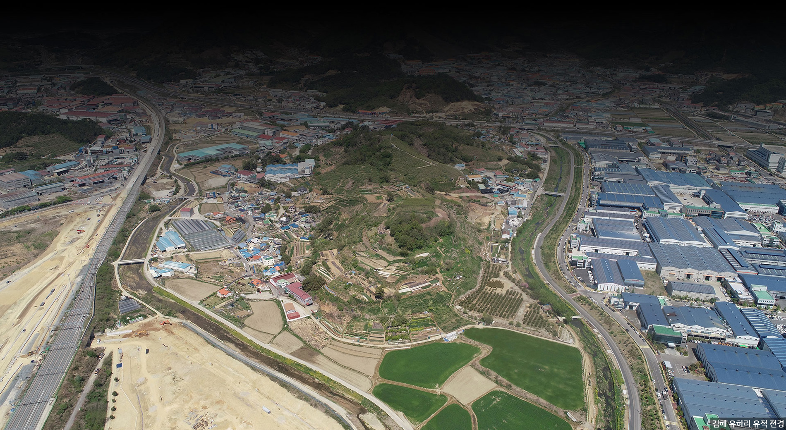
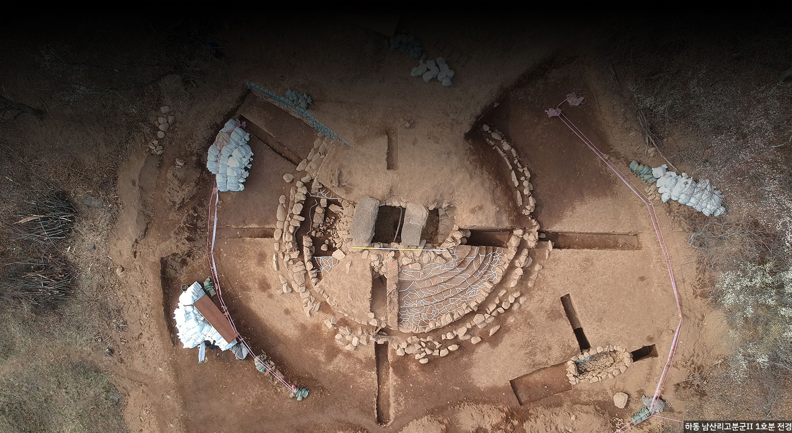
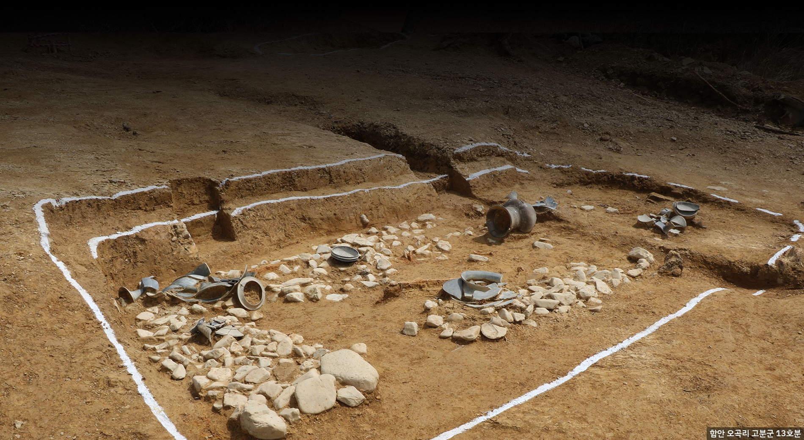
건설 공사 시행자의 의뢰로 해당 건설공사 지역에 문화유산 매장·분포 사전 조사
관련전문가가 공사현장에 참관하여 매장유산의 존재 여부를 확인하는 조사
건설공사 면적 중, 일부에서 매장유산 유존 여부를 확인하는 조사
건설공사 면적 중, 매장유산 유존지역 면적 전체에 대한 매장유산 조사
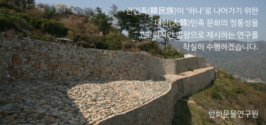
한민족이 하나로 나아가기 위한 대한민족 문화의 정통성을 연구를 통해 착실히 수행하겠습니다.
발간보고서 + 더보기
자료요청 + 더보기
조사의뢰 + 더보기
조사경비계산 + 더보기
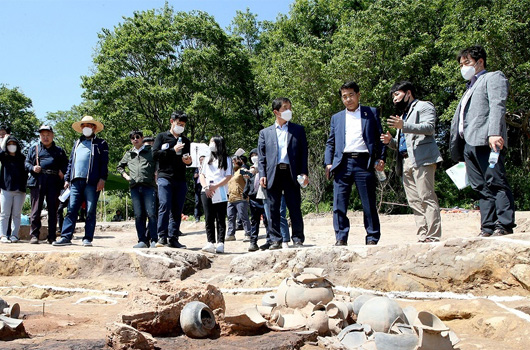
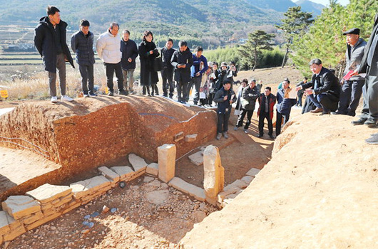
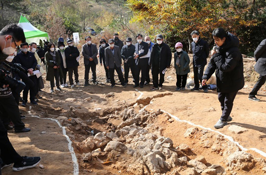
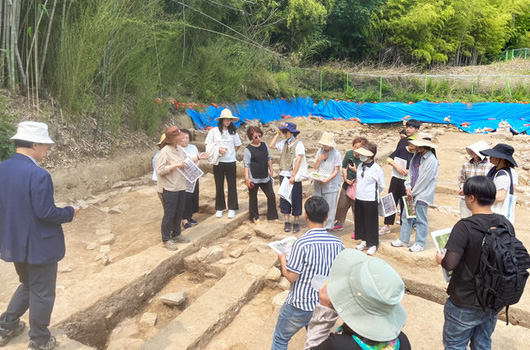
창원국가산업단지 및 창원 성산패총 발굴 50주년 기념 학술대회 안내
가야고분군 세계유산 등재 1주년 국제학술대회-가야고분군의 세계유산적 가치(세계유산의 보존과 활용)
(재)한화문물연구원 채용공고
경산 임당동 267-1번지 근린생활시설 신축부지 내 국비지원 발굴조사 현장설명회 개최 안내
남원 향교동(69-2번지) 구암지구 도시개발사업부지 내 발굴조사 현장설명회 개최 안내
[KBS]가야사 보고 ‘거창 무릉리 고분군’ 경상남도 문화재지정
[강원일보]370여년전 강원도 최초 사액서원 문암서원 터 확인
[뉴스경남]김해 ‘유하동유적 국가사적 지정’학술대회 열려
[경남도민신문]김해 유하동 가야 유적 사적 지정 학술대회 10일 개최
[경남일보]김해 유하동유적 국가사적 지정 위한 학술대회 개최
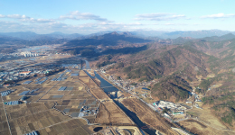
거창 창포원에서 바라본 거창 무릉리 고분군 원경
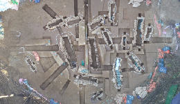
거창 무릉리고분군 Ⅱ지구 M49호분 조사 후 전경
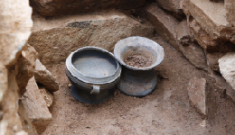
거창 무릉리고분군 Ⅱ지구 M49호분 15호 석곽묘 출토 유물
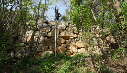
평해읍성 외벽부 세부사진(울진군 평해리 899-4번지)
고객지원
협업포털
공간정보